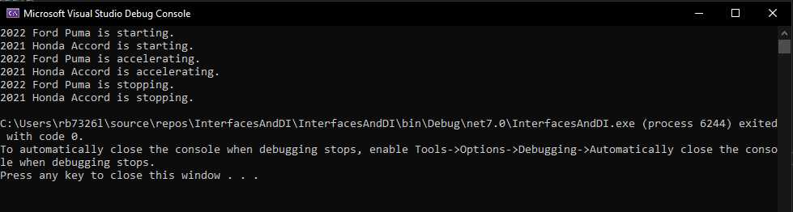
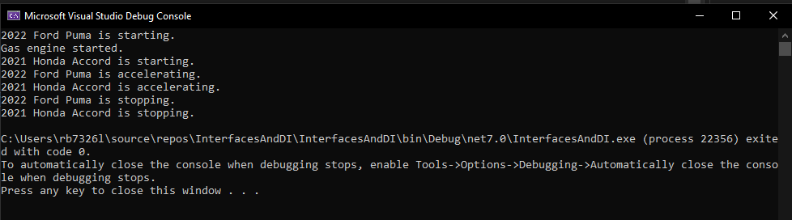

Lab 15: Interfaces and Dependency Injection
In this lab you are going to build a console application that demonstrates the concepts of Interfaces and Dependency Injection (DI).
Task 1
-
Create a new C# Console Application make sure you select.... and call it
InterfacesAndDI -
Add a new item in the solution and call it
Car.cs -
Inside the class create two
publicfields calledModelandYear, each with agetand aprivate set:// Fields public string Model { get; private set; } public int Year { get; private set; } -
Make an constructor with the following arguments
string model,int year:// Constructor public Car(string model, int year) { Model = model; Year = year; } -
Next you need to create three methods, called
Start,AccelerateandStop, inside each method out puit the year and model along with the verb of the funtion.// Methods public void Start() { Console.WriteLine($"{Year} {Model} is starting."); } public void Accelerate() { Console.WriteLine($"{Year} {Model} is accelerating."); } public void Stop() { Console.WriteLine($"{Year} {Model} is stopping."); }
Task 2:
-
Modify
main()in theProgram.csfile to create to objects of theCarclass called,myCarandanotherCar, remember you need to initialise the object using the expected arguments as per theCarconstructor.// Creating Car instances Car myCar = new Car("Ford Puma", 2022); Car anotherCar = new Car("Honda Accord", 2021); -
For each object call the respective methods;
start,accelerateandstop// Using Car methods myCar.Start(); anotherCar.Start(); // Additional method myCar.Accelerate(); anotherCar.Accelerate(); myCar.Stop(); anotherCar.Stop(); -
Run the program and you will see the following output:

Task 3.
Now we are going to use Interfaces and Dependency Injection.
-
Create a new file, and call it
IEngine.cs, you should see the following code withing the name space:internal interface IEngine { }- Replace the
internalkeyword withpublic
Note:
Naming conventions really do matter, as you can see the VS has templated the code with the keyword interface, because the name of the file has
IName.cs - Replace the
-
Add the following prototype methods, inside the
IEngineClass.void Start(); void Stop(); void Accelerate(); void Temperature(); -
Go back to the
Car.csand add to the class:public class Car { private readonly IEngine _engine; ... } -
Modify the Car constructor to include the
IEngineclass:// Constructor with Dependency Injection public Car(string model, int year, IEngine engine) { Model = model; Year = year; _engine = engine; } -
Modify the
start,accelerateandstopmethods to use the respective interface methods:// Methods public void Start() { Console.WriteLine($"{Year} {Model} is starting."); // Delegating the engine start to the injected engine _engine.Start(); } public void Accelerate() { Console.WriteLine($"{Year} {Model} is accelerating."); // Delegating the engine accelerate to the injected engine _engine.Accelerate(); } public void Stop() { Console.WriteLine($"{Year} {Model} is stopping."); // Delegating the engine stop to the injected engine _engine.Stop(); }
Note:
Program.cswill have some errors relating to the constructors, we will fix this with the next files.
Task 4:
In order to use the injected engine interface, we need to use the use inheritance for the interface.
-
Create two new class files called,
ElectricEngineandGasEngine. -
Inside the
GasEngine.csfile inherit theIEngineclass:- Notice that you will get errors:

- Press Alt+Enter and get the proposed fixes.

-
Choose implement interface and you should see the following autocomplete:
... public void Accelerate() { throw new NotImplementedException(); } public void Start() { throw new NotImplementedException(); } public void Stop() { throw new NotImplementedException(); } public void Temperature() { throw new NotImplementedException(); } ...Note:
NotImplementedExceptionshould be replaced with //TODO, unless you want the program to crash.
-
Repeat for the
ElectricEngineclass. -
Reopen the GasEngine and modify the
Startmethod:public void Start() { Console.WriteLine("Gas engine started."); } -
Go back to
Program.csfix the errors in the initialisation of the Car by adding anew GasEngineandnew ElectricEngine.Car myCar = new Car("Ford Puma", 2022, new GasEngine()); Car anotherCar = new Car("Honda Accord", 2021, new ElectricEngine()); -
Run and see the following output:

Can you see that the Interface
IEnginehas been invoked and theGasEngineobjects methodStart()has been invoked for the Ford Puma. -
Complete the other Methods for the
ElectricEngineandGasEngineclasses.
Task 5
Because the IEngine can be injected and delegated make a Boat class and start, accelerate, and stop the its engine.
Source Files
Download project upto end of Task 4 -> InterfacesAndDI.zip